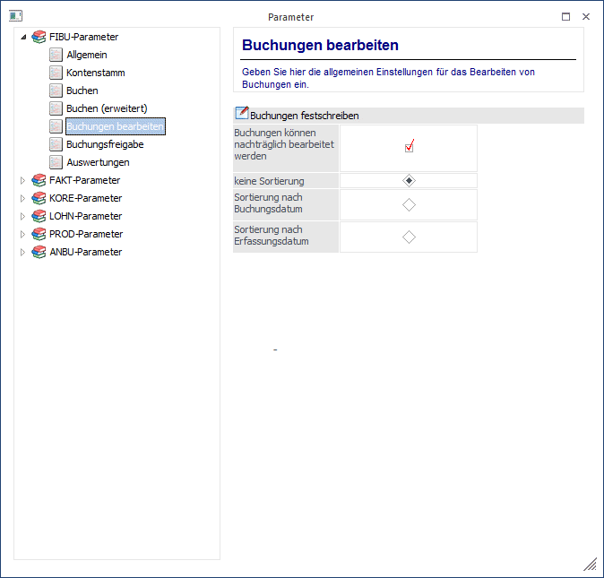
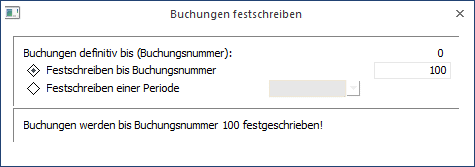
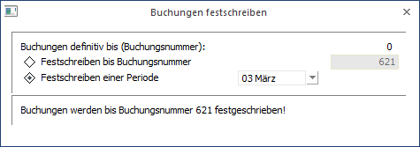
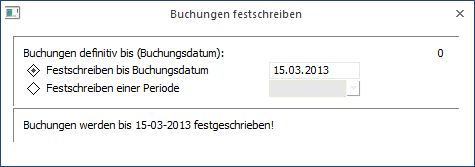
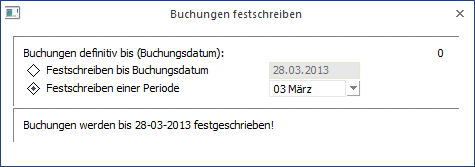
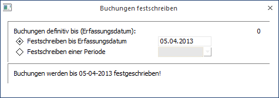
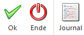

Hier werden die Buchungen, die bisher nur temporär, d.h. in Form eines vorläufigen Stapels, gespeichert wurden, definitiv festgeschrieben. D.h. ab diesem Zeitpunkt ist kein Detail dieser Buchungszeilen mehr editierbar bzw. beeinflussbar.
Ist in den FIBU-Parametern im Menüpunkt
1 WinLine START
1 Parameter
1 Applikations-Parameter
grundsätzlich die Option "Buchungen können nachträglich bearbeitet werden" deaktiviert, ist dieser Menüpunkt für die Bearbeitung irrelevant, da jede Buchung bereits nach Absetzen der Zeile bzw. des Buchungsstapels fix in das Journal eingetragen wird und damit bereits dem Status entspricht, den sie sonst nach dem "Buchungen festschreiben" erhalten würde (das "Festschreiben" also nicht mehr erforderlich ist).

Ø Buchungen definitiv bis:
Hier wird die letzte Journalzeile angezeigt, bis zu der die Buchungen im Journal bereits festgeschrieben wurden.
Ø Buchungen festschreiben:
Hier wird eingegeben, welche Buchungen im Journal festgeschrieben werden sollen.
Entsprechend der in den FIBU-Parametern eingestellten Sortierung erhalten Sie unterschiedliche Anzeigen bei der Auswahl, bis zu welcher Buchung die Zeilen im Journal festgeschrieben werden sollen.
ü Einstellung "Keine Sortierung" in
den FIBU-Parametern
In diesem Fall wird lediglich die Buchungsnummer als
Kriterium angezeigt, da die Reihenfolge genau der Reihenfolge der Erfassung
entspricht (aber z.B. keine Sortierung nach einem Buchungsdatum gewünscht ist).
Als "bis"-Wert wird die Buchungsnummer der Journalzeile eingegeben, bis zu der
das Journal festgeschrieben werden soll.


ü Einstellung "Sortierung nach
Buchungsdatum" in den FIBU-Parametern
In diesem Fall wird das letzte
Buchungsdatum der letzten definitiven Buchungszeile angezeigt und die Sortierung
der jetzt festzuschreibenden Buchungszeilen erfolgt nach dem Buchungsdatum. Als
"bis"-Wert wird das Buchungsdatum der Journalzeile eingegeben, bis zu der das
Journal festgeschrieben werden soll.


ü Einstellung "Sortierung nach
Erfassungsdatum" (vor allem relevant für Italien)
In diesem Fall wird das
letzte Erfassungsdatum der letzten Buchungszeile angezeigt, und die Sortierung
der jetzt festzuschreibenden Buchungen erfolgt auch nach diesem Kriterium
(Erfassungsdatum). Als "bis"-Wert wird das Erfassungsdatum der Journalzeile
eingegeben, bis zu der das Journal festgeschrieben werden soll.

Wichtig
Im Kontoblattdruck gibt es für die Unterscheidung von "vorläufigen" und "definitiven" Ausdrucken ein eigenes Kennzeichen, damit der Status der Buchungen am Ausdruck ausgewiesen wird. Solange die Buchungen noch nicht festgeschrieben wurden, und am Kontoblatt noch kein "Originaldruck" durchgeführt wurde, steht auf allen Kontoblättern bei der Ausgabe "vorläufig" zu lesen.
Ein Originaldruck (siehe Kontoblatt) kann ausschließlich für festgeschriebene Buchungsbereiche gemacht werden. Damit ist auf jedem Ausdruck automatisch dokumentiert, ob es sich bei den angezeigten Zeilen um den Ausdruck von vorläufigen Stapelzeilen handelt, oder um definitiv festgeschriebene (und damit natürlich auch nicht mehr veränderbare) Buchungen.
Buttons

Ø OK
Durch Anklicken dieses Buttons oder F5 werden die Buchungen entsprechend der vorgenommenen Einstellung festgeschrieben und das Festschreibungsdatum in die Journaltabelle geschrieben.
Ø Ende
Dadurch wird das Fenster geschlossen und keine Buchungen festgeschrieben.
Ø Journal
Über diesen Button kann das Journal angezeigt werden.